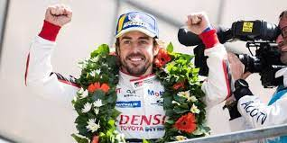
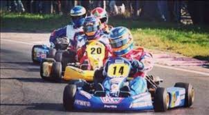
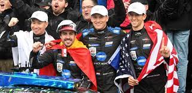

Ha participado en muchas competiciones internacionales, pero la más conocida e importante por todos los aficionados es la Fórmula 1 . También ha participado en otras competiciones, como por ejemplo el Campeonato Mundial de Karting, el Campeonato Mundial de Resistencia de la FIA, las 24 Horas de Le Mans y las 24 Horas de daytona.


